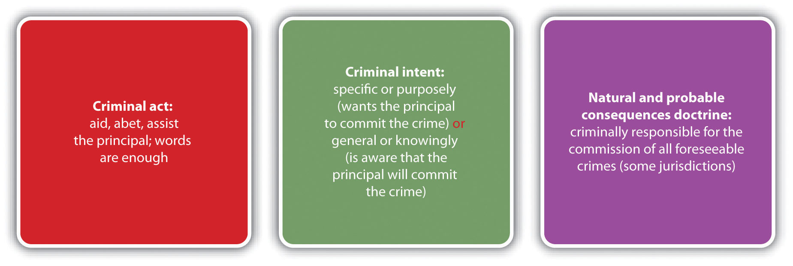

Often more than one criminal defendant plays a role in the commission of a crime. Defendants working together with a common criminal purpose or design are acting with complicityWorking together with a common criminal purpose and design.. When the participation and criminal conduct varies among the defendants, an issue arises as to who is responsible for which crime and to what degree. This chapter analyzes different parties to crime, along with their accompanying criminal liability. Chapter 8 "Inchoate Offenses" examines crimes that necessarily involve more than one person such as conspiracy and solicitation, as well as another inchoate or incomplete crime, attempt.
At early common law, parties to crime were divided into four categories. A principal in the first degreeAt early common law, a defendant who committed a crime with the help of other defendants. actually committed the crime. A principal in the second degreeAt early common law, a defendant who was present at the crime scene and helped a principal in the first degree commit a crime. was present at the scene of the crime and assisted in its commission. An accessory before the factAt early common law, a defendant who was not present at the crime scene and helped a principal in the first degree prepare to commit a crime. was not present at the scene of the crime, but helped prepare for its commission. An accessory after the factAt early common law, a defendant who helped a principal escape or avoid arrest, prosecution for, or conviction of a crime. helped a party to the crime after its commission by providing comfort, aid, and assistance in escaping or avoiding arrest and prosecution or conviction.
In modern times, most states and the federal government divide parties to crime into two categories: principalA defendant who commits a crime with the complicity of other defendants.sCal. Penal Code § 31, accessed December 20, 2010,http://law.onecle.com/california/penal/31.html. and their accomplicesA defendant who helps a principal commit a crime., and accessories.Idaho Code Ann. § 18-205, accessed December 20, 2010, http://www.legislature.idaho.gov/idstat/Title18/T18CH2SECT18-205.htm. The criminal actor is referred to as the principal, although all accomplices have equal criminal responsibility as is discussed in Section 7.1 "Parties to Crime".
An accomplice under most state and federal statutes is responsible for the same crime as the criminal actor or principal.18 U.S.C. § 2, accessed December 20, 2010, http://codes.lp.findlaw.com/uscode/18/I/1/2. However, accomplice liability is derivative; the accomplice does not actually have to commit the crime to be responsible for it. The policy supporting accomplice liability is the idea that an individual who willingly participates in furthering criminal conduct should be accountable for it to the same extent as the criminal actor. The degree of participation is often difficult to quantify, so statutes and cases attempt to segregate blameworthy accomplices based on the criminal act and intent elements, as is discussed in Section 7.1 "Parties to Crime".
In the majority of states and federally, an accomplice must voluntarily act in some manner to assist in the commission of the offense. Some common descriptors of the criminal act element required for accomplice liability are aid, abet, assist, counsel, command, induce, or procure.K.S.A. § 21-3205, accessed December 20, 2010, http://kansasstatutes.lesterama.org/Chapter_21/Article_32/#21-3205. Examples of actions that qualify as the accomplice criminal act are helping plan the crime, driving a getaway vehicle after the crime’s commission, and luring a victim to the scene of the crime. The Model Penal Code defines the accomplice criminal act element as “aids…or attempts to aid such other person in planning or committing [the offense]” (Model Penal Code § 2.06(3) (a) (ii)).
In many states, words are enough to constitute the criminal act element required for accomplice liability.N.Y. Penal Law § 20.00, accessed December 26, 2010, http://law.onecle.com/new-york/penal/PEN020.00_20.00.html. On the other hand, mere presence at the scene of the crime, even presence at the scene combined with flight, is not sufficient to convert a bystander into an accomplice.Commonwealth v. Hargrave, 745 A.2d 20 (2000), accessed December 20, 2010, http://scholar.google.com/scholar_case?case=14481330811091769472&hl=en&as_sdt=2&as_vis=1&oi=scholarr. However, if there is a legal duty to act, a defendant who is present at the scene of a crime without preventing its occurrence could be liable as an accomplice in many jurisdictions.People v. Rolon, 160 Cal. App. 4th 1206 (2008), accessed December 20, 2010, http://caselaw.findlaw.com/ca-court-of-appeal/1308666.html. As the Model Penal Code provides, “[a] person is an accomplice of another person in the commission of an offense if…having a legal duty to prevent the commission of the offense, fails to make proper effect so to do” (Model Penal Code § 2.06(3)(a)(iii)).
Review the criminal law issues example in Chapter 1 "Introduction to Criminal Law", Section 1.2.1 "Example of Criminal Law Issues". In that example, Clara and Linda go on a shopping spree. Linda insists that they browse an expensive department store. After they enter the lingerie department, Linda surreptitiously places a bra into her purse. Clara watches, horrified, but does not say anything, even though a security guard is standing nearby. As Linda and Clara leave the store, an alarm is activated. Linda and Clara run away with the security guard in pursuit. In this case, Clara has probably not committed the criminal act element required for accomplice liability. Although Clara was present at the scene of the crime and did not alert the security guard, mere presence at the scene is not sufficient to constitute the accomplice criminal act. Clara fled the scene when the alarm went off, but presence at the scene of a crime combined with flight is still not enough to comprise the accomplice criminal act. Thus Clara has probably not committed theft as an accomplice, and only Linda is subject to a criminal prosecution for this offense.
Phoebe, the parent of a two-year-old named Eliza, watches silently as her live-in boyfriend Ricky beats Eliza. In Phoebe’s state, parents have a duty to come to the aid of their children if their safety is threatened. Ricky severely injures Eliza, and both Phoebe and Ricky are arrested and charged with battery and child endangerment. Phoebe probably has committed the criminal act element required for accomplice liability in many jurisdictions. Phoebe does not personally act to physically harm her child. However, her presence at the scene combined with a legal duty to act could be enough to make her an accomplice. Thus Phoebe has most likely committed battery and child endangerment as an accomplice, and both she and Ricky are subject to a criminal prosecution for these offenses.
The criminal intent element required for accomplice liability varies, depending on the jurisdiction. In many jurisdictions, the accomplice must act with specific intent or purposely when aiding or assisting the principal.Or. Rev. Stat. § 161.155, accessed December 20, 2010, https://www.oregonlaws.org/ors/161.155. Specific intent or purposely means the accomplice desires the principal to commit the crime. The Model Penal Code follows this approach and requires the accomplice to act “with the purpose of promoting or facilitating the commission of the offense” (Model Penal Code § 2.06(3) (a)). In other jurisdictions, if the crime is serious and the accomplice acts with general intent or knowingly or has awareness that the principal will commit the crime with his or her assistance, intent to further the crime’s commission could be inferred.People v. Lauria, 251 Cal. App. 2d 471 (1967), accessed December 21, 2010, http://scholar.google.com/scholar_case?case=686539897745974621&hl=en&as_sdt=2&as_vis=1&oi=scholarr. In a minority of jurisdictions, only general intent or acting knowingly that the crime will be promoted or facilitated is required, regardless of the crime’s seriousness.Washington Rev. Code Ann. § 9A.08.020 (3) (a), accessed December 21, 2010, http://apps.leg.wa.gov/rcw/default.aspx?cite=9A.08.020.
Joullian, a hotel owner, rents a hotel room to Winnifred, a prostitute. In a state that requires an accomplice to act with specific intent or purposely, Joullian must desire Winnifred to commit prostitution in the rented room to be Winnifred’s accomplice. Evidence that Joullian stands to benefit from Winnifred’s prostitution, such as evidence that he will receive a portion of the prostitution proceeds, could help prove this intent. If Joullian’s state allows for an inference of specific intent or purposely with serious crimes when an accomplice acts with general intent or knowingly, it is unlikely that prostitution is a felony that would give rise to the inference. If Joullian’s state requires only general intent or knowingly for accomplice liability regardless of the crime’s seriousness, to be deemed an accomplice Joullian must simply be aware that renting Winnifred the room will promote or facilitate the act of prostitution.
Accomplice liability should be imputed only to blameworthy, deserving defendants. However, in some jurisdictions, if the crime the defendant intentionally furthers is related to the crime the principal actually commits, the defendant is deemed an accomplice. As with legal causation, discussed in Chapter 4 "The Elements of a Crime", foreseeability is the standard. Under the natural and probable consequences doctrineA doctrine that some jurisdictions follow holding an accomplice criminally responsible for all crimes the principal commits that are foreseeable when the accomplice assists the principal., if the defendant assists the principal with the intent to further a specific crime’s commission, and the principal commits a different crime that is foreseeable at the time of the defendant’s assistance, the defendant could be liable as an accomplice.ME Rev. Stat. Ann. tit. 17-A § 57 (3) (A), accessed December 21, 2010, http://www.mainelegislature.org/legis/statutes/17-a/title17-Asec57.html. Several jurisdictions have rejected this doctrine as an overly harsh extension of accomplice liability.Bogdanov v. People, 941 P.2d 247, 251 n. 8 (1997), accessed December 21, 2010, http://scholar.google.com/scholar_case?case=13910767150180460511&hl=en&as_sdt=2&as_vis=1&oi=scholarr#[8].
José shows up drunk and unruly at his friend Abel’s house and tells Abel he wants to “beat the hell” out of his girlfriend Maria. José asks Abel to drive him to Maria’s house, and Abel promptly agrees. Abel drives José to Maria’s house and waits in the car with the engine running. José forces his way into Maria’s house and then beats and thereafter rapes her. If José and Abel are in a jurisdiction that recognizes the natural and probable consequences doctrine, the trier of fact could find that Abel is an accomplice to the battery, burglary, and rape of Maria. Abel appears to have the criminal intent required to be an accomplice to battery because he assisted José in his quest to beat Maria. If burglary and rape were foreseeable when Abel drove a drunk and angry José to Maria’s house, the natural and probable consequences doctrine would extend Abel’s accomplice liability to these crimes. If Abel is not in a natural and probable consequences jurisdiction, the trier of fact must separately determine that Abel had the criminal intent required to be an accomplice to battery, burglary, and rape; Abel’s intent will be ascertained according to the jurisdiction’s accomplice intent requirement—either specific intent or purposely or general intent or knowingly.
Figure 7.1 Diagram of Accomplice Liability
An accomplice is criminally responsible for the crime(s) the principal commits. Although the sentencing may vary based on a defendant-accomplice’s criminal record or other extenuating circumstances related to sentencing, such as prior strikes, in theory, the accomplice is liable to the same degree as the principal. So if accomplice liability is established in the examples given in Section 7.1.2 "Accomplice Elements"; Phoebe is criminally responsible for battery and child endangerment, Joullian is criminally responsible for prostitution, and Abel is criminally responsible for battery and possibly burglary and rape. The principal should also be criminally responsible for his or her own actions. However, occasionally a situation arises where the principal is not prosecuted or acquitted because of a procedural technicality, evidentiary problems, or a plea bargain, as is discussed in Section 7 "Prosecution of an Accomplice When the Principal Is Not Prosecuted or Is Acquitted".
Although accomplice liability is derivative, in many jurisdictions the trier of fact can determine that a defendant is an accomplice even if the criminal actor or principal is not prosecuted or has been tried and acquitted for the offense.Standefer v. U.S., 447 U.S. 10 (1980), accessed December 22, 2010, http://scholar.google.com/scholar_case?case=11715693283858901517&hl=en&as_sdt=2&as_vis=1&oi=scholarr. Thus a defendant can be liable for a crime even though he or she did not commit it and the defendant who did was spared prosecution or found not guilty. While this situation appears anomalous, if a defendant helps another commit a crime with the intent to further the crime’s commission, punishment for the completed crime is appropriate. As the Model Penal Code states, “[a]n accomplice may be convicted on proof of the commission of the offense and of his complicity therein, though the person claimed to have committed the offense has not been prosecuted or convicted or has been convicted of a different offense or degree of offense…or has been acquitted” (Model Penal Code § 2.06(7)).
Review the example in Section 7 "Example of the Natural and Probable Consequences Doctrine" with José and Abel. Assume that after José burglarizes, beats, and rapes Maria, local police arrest José and Abel. The police transport José and Abel to the police station and take them to separate rooms for interrogation. The police officer who interrogates José is a rookie and forgets to read José his Miranda rights. Thereafter, the police contact Maria, but she refuses to cooperate with the investigation because she fears reprisal from José. The district attorney decides not to prosecute José because of the tainted interrogation. In this case, Abel could still be prosecuted for battery and possibly rape and burglary as an accomplice in some jurisdictions. Although José is the principal and actually committed the crimes, it is not necessary for José to suffer the same criminal prosecution and punishment as Abel. If the elements required for accomplice liability are present, Abel can be fully responsible for the crimes committed by José, whether or not José is prosecuted for or convicted of these offenses.
Attorney: Nancy Garrido in Tears during Sentencing
Phillip Garrido, with his wife Nancy’s help, kidnapped Jaycee Dugard, an eleven-year-old girl, and held her captive for eighteen years. During that time, Dugard was repeatedly raped, became pregnant twice, and gave birth to two children. Phillip Garrido pleaded guilty to multiple charges of rape and kidnapping and received a sentence of four hundred years to life in prison. Nancy was prosecuted as an accomplice, pleaded guilty and received a sentence of thirty-six years to life in prison.Michael Martinez, “Phillip, Nancy Garrido sentenced in Jaycee Dugard Kidnapping,” CNN website, accessed August 15, 2011, http://articles.cnn.com/2011-06-02/justice/california.garridos.sentencing_1_jaycee-dugard-terry-probyn-phillip-garrido?_s=PM:CRIME. Nancy Garrido’s attorney discusses her sentencing as an accomplice in this video:
Ghailani Guilty of One Count
Ahmed Ghailani, an alleged terrorist, was transferred from a military prison in Guantanamo Bay and tried as a civilian in a federal district court in New York. Ghailani was indicted for accomplice liability and conspiracy for the deaths of hundreds of citizens killed during Al Qaeda bombings of US embassies in Nairobi, Kenya, and Tanzania. At trial, the prosecution failed to convince the jury that Ghailani had the criminal intent required for accomplice liability. He was acquitted of the murders and attempted murders as an accomplice and convicted of one conspiracy charge. However, he received a sentence of life in prison without the possibility of parole for the conspiracy charge, the same sentence he would have received if convicted of all the murder and attempted murder charges.Benjamin Weiser, “Ex-Detainee Gets Life Sentence in Embassy Blasts,” New York Times website, accessed January 26, 2011, http://www.nytimes.com/2011/01/26/nyregion/26ghailani.html. A news story on the conviction of Ghailani is shown in this video:
The four parties to crime at early common law were principals in the first degree, principals in the second degree, accessories before the fact, and accessories after the fact. These designations signified the following:
Answer the following questions. Check your answers using the answer key at the end of the chapter.